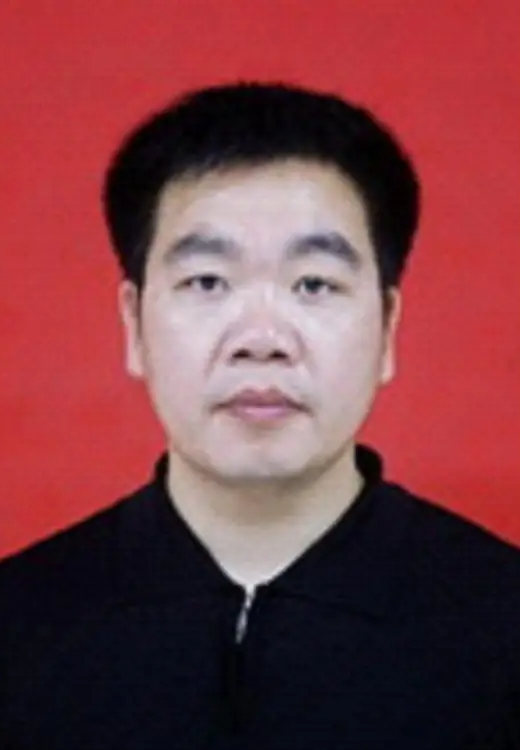

Leader

Prof. Longsheng Fu
HomepageProf. Longsheng Fu is a Professor and Ph.D. Supervisor, selected for the National Talent Program (Smart Agriculture) and Shaanxi Young Outstanding Talents. He serves as the Editor-in-Chief of Computers and Electronics in Agriculture (CAS Zone 1 Top).
His research focuses on smart agriculture technologies and equipment, specifically full-process intelligent orchard production robots (such as kiwifruit thinning, pollination, fruit thinning, harvesting, and pruning robots). He has led over 10 enterprise cooperation projects and developed multiple prototype products. He has published over 62 SCI papers as the first/corresponding author (including 8 ESI Highly Cited Papers) and has been continuously recognized as one of the World's Top 2% Scientists and a Highly Cited Chinese Researcher by Elsevier. He holds 14 authorized Chinese invention patents.

Prof. Mingliang Wu (Dean)
HomepageProf. Mingliang Wu is a Ph.D., Second-level Professor, and Ph.D. Supervisor, currently serving as the Dean of the College of Mechanical and Electrical Engineering at Hunan Agricultural University. He is also an expert panel member of the Ministry of Agriculture and Rural Affairs and a mechanical expert for the Hunan Rapeseed Industry Technology System.
His research focuses on the innovative design and experimental research of agricultural machinery, specifically dedicating to the mechanized production technology and equipment for oil crops (especially rapeseed). He has led over 10 national and provincial-level projects. He has received four Second Prizes for Scientific and Technological Progress from Hunan Province, holds 32 authorized invention patents, and has published over 65 academic papers.